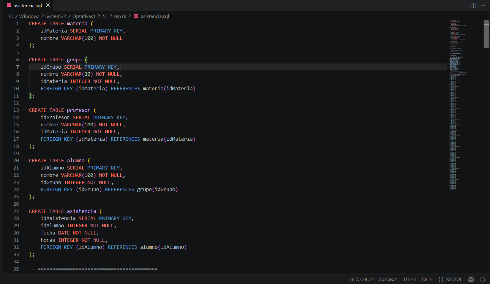
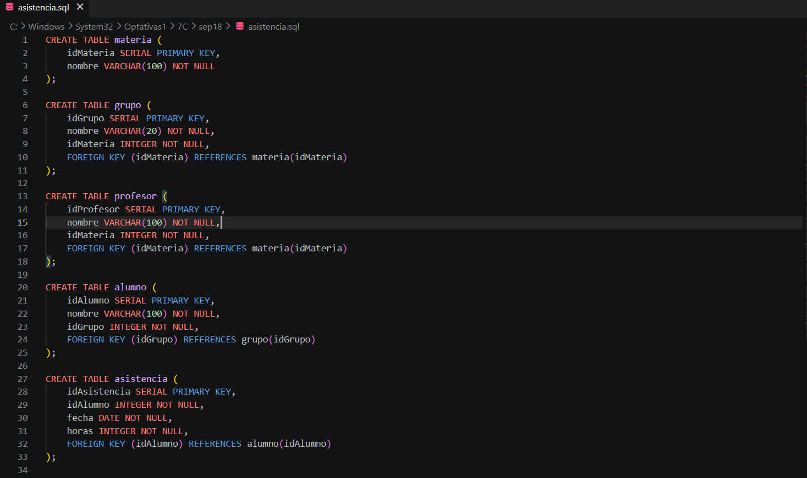
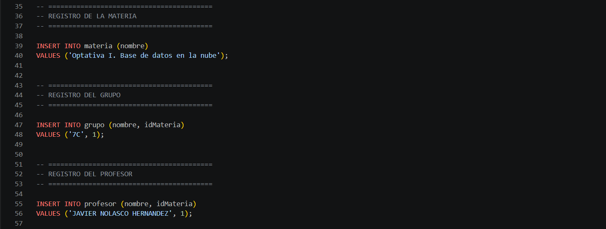
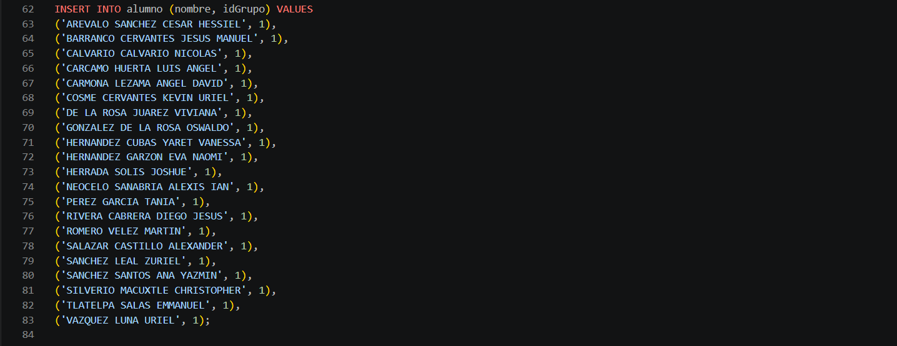
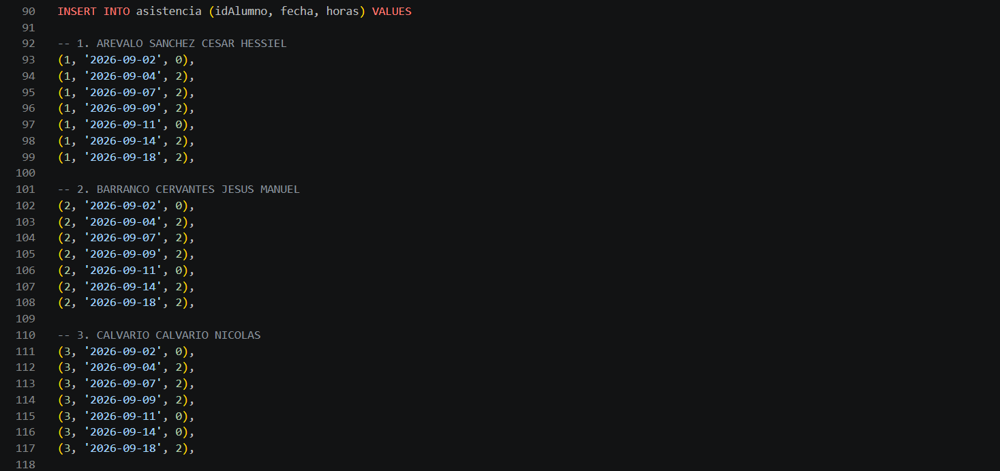
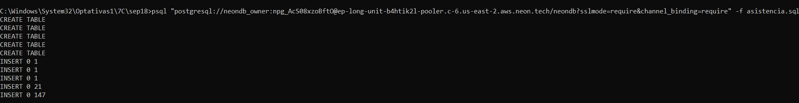
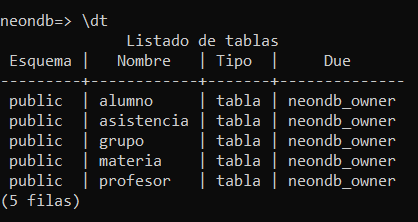
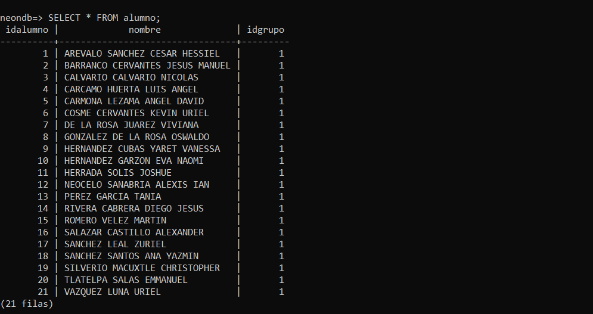
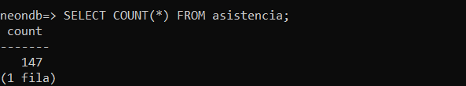
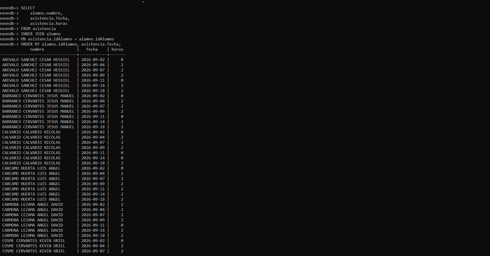

Ingeniería en Tecnologías de la Información e Innovación Digital
BASE DE DATOS EN LA NUBE
Práctica de laboratorio
Alexis Ian Neocelo Sanabria
Javier Nolasco Hernández
18 de septiembre de 2026
Contenido de la práctica
Descripción general y propósito de la práctica.
Conceptos relacionados con PostgreSQL, Neon, psql y bases de datos relacionales.
Creación y ejecución del archivo asistencia.sql, inserción de registros y comprobación de resultados.
Resultados obtenidos y conocimientos adquiridos durante la práctica.
Fuentes de información utilizadas para el desarrollo de la práctica.
Creación y administración de una base de datos de asistencia
Las bases de datos permiten organizar y administrar información de manera estructurada, facilitando su almacenamiento, consulta y actualización. En el ámbito académico pueden utilizarse para registrar información relacionada con materias, grupos, profesores, alumnos y asistencias, permitiendo establecer relaciones entre los diferentes datos que forman parte de un sistema escolar.
En esta práctica se desarrolló un archivo denominado asistencia.sql, cuyo propósito fue definir la estructura de una base de datos para el control de asistencia del grupo 7C de la materia Base de Datos en la Nube. Para ello, se crearon las tablas materia, grupo, profesor, alumno y asistencia, estableciendo relaciones entre ellas mediante llaves primarias y llaves foráneas.
Además de crear la estructura de la base de datos, se registró la información correspondiente a la materia, el grupo, el profesor y los 21 alumnos incluidos en la lista de asistencia proporcionada para la práctica. Posteriormente, se almacenaron los valores de asistencia correspondientes a siete fechas del mes de septiembre de 2026, obteniendo un total de 147 registros en la tabla asistencia.
Finalmente, el archivo SQL fue ejecutado mediante el cliente psql sobre la base de datos neondb alojada en Neon. Después de la ejecución, se realizaron diferentes consultas para comprobar la creación de las tablas, verificar la cantidad de registros almacenados y relacionar la información de los alumnos con sus respectivas asistencias. De esta manera, la práctica permitió aplicar conceptos de bases de datos relacionales en un entorno de PostgreSQL alojado en la nube.
Fundamentos utilizados para el desarrollo de la práctica
PostgreSQL es un sistema de gestión de bases de datos objeto-relacional de código abierto que permite almacenar, organizar y consultar información. Además, ofrece características como consultas complejas, llaves foráneas, disparadores, integridad transaccional y control de concurrencia (PostgreSQL Global Development Group, 2026).
En un sistema de gestión de bases de datos relacional, la información se organiza mediante relaciones que pueden representarse como tablas. Cada tabla está formada por filas y columnas, donde las columnas tienen un tipo de dato definido y las filas representan los registros almacenados (PostgreSQL Global Development Group, 2026).
Este modelo fue aplicado en la práctica mediante las tablas materia, grupo, profesor, alumno y asistencia, las cuales permiten separar la información y relacionarla mediante identificadores.
Una llave primaria es una restricción utilizada para identificar de manera única cada fila de una tabla. Los valores que forman una llave primaria deben ser únicos y no pueden ser nulos (PostgreSQL Global Development Group, 2026).
En la práctica se utilizaron llaves primarias como idMateria, idGrupo, idProfesor, idAlumno e idAsistencia para identificar individualmente los registros almacenados en las diferentes tablas.
Una llave foránea permite establecer una relación entre dos tablas. PostgreSQL establece que los valores de una llave foránea deben corresponder con valores existentes en la tabla referenciada, contribuyendo de esta manera a mantener la integridad referencial de los datos (PostgreSQL Global Development Group, 2026).
En la base de datos desarrollada, por ejemplo, la tabla alumno utiliza idGrupo para relacionar cada alumno con su grupo, mientras que la tabla asistencia utiliza idAlumno para asociar cada registro de asistencia con el alumno correspondiente.
psql es la herramienta de terminal interactiva utilizada para trabajar con PostgreSQL. Mediante este cliente es posible conectarse a una base de datos, ejecutar instrucciones SQL y utilizar comandos propios para consultar información relacionada con la estructura de una base de datos (PostgreSQL Global Development Group, 2026).
Durante esta práctica se utilizó psql para ejecutar el archivo asistencia.sql sobre la base de datos neondb y posteriormente comprobar las tablas y registros creados.
Neon proporciona infraestructura para trabajar con bases de datos PostgreSQL de forma remota. La conexión puede realizarse mediante clientes compatibles con PostgreSQL, incluyendo psql, utilizando los datos de conexión correspondientes al proyecto (Neon, 2024).
En esta práctica, Neon fue utilizado para alojar la base de datos neondb, permitiendo ejecutar desde Windows las instrucciones almacenadas en asistencia.sql y posteriormente consultar la información creada.
SQL permite consultar información almacenada en las tablas y combinar datos relacionados. PostgreSQL incluye operaciones de unión entre tablas que permiten obtener información procedente de más de una relación (PostgreSQL Global Development Group, 2026).
Este concepto fue aplicado al final de la práctica mediante un INNER JOIN entre alumno y asistencia, con el objetivo de mostrar el nombre del alumno junto con la fecha y las horas registradas en su asistencia.
Desarrollo, ejecución y comprobación de la base de datos de asistencia
Para comenzar la práctica se creó un directorio de trabajo destinado a almacenar los archivos utilizados durante el desarrollo. La carpeta se ubicó dentro del directorio de prácticas de la materia y se nombró sep18, haciendo referencia a la fecha correspondiente a la actividad.
Posteriormente, desde la terminal de Windows se accedió a dicha ubicación y se utilizó el comando code . para abrir el directorio directamente en Visual Studio Code. Esto permitió trabajar con los archivos de la práctica desde un entorno organizado.
cd C:\Windows\System32\Optativas1\7C\sep18
code .
Una vez abierto Visual Studio Code, se creó el archivo asistencia.sql. Este archivo se utilizó como script principal para almacenar las instrucciones SQL necesarias para crear las tablas y registrar la información correspondiente a la materia, grupo, profesor, alumnos y asistencias.

Figura 1. Creación del archivo asistencia.sql dentro del directorio de la práctica.
Después de crear el archivo asistencia.sql, se definió la estructura de la base de datos. Para organizar la información de la práctica se crearon cinco tablas: materia, grupo, profesor, alumno y asistencia.
Cada tabla cuenta con una llave primaria generada mediante SERIAL, mientras que las relaciones entre los diferentes registros se establecieron mediante llaves foráneas. De esta manera, fue posible relacionar el grupo con la materia, el profesor con la materia, los alumnos con su grupo y cada registro de asistencia con el alumno correspondiente.
CREATE TABLE materia (
idMateria SERIAL PRIMARY KEY,
nombre VARCHAR(100) NOT NULL
);
CREATE TABLE grupo (
idGrupo SERIAL PRIMARY KEY,
nombre VARCHAR(20) NOT NULL,
idMateria INTEGER NOT NULL,
FOREIGN KEY (idMateria) REFERENCES materia(idMateria)
);
CREATE TABLE profesor (
idProfesor SERIAL PRIMARY KEY,
nombre VARCHAR(100) NOT NULL,
idMateria INTEGER NOT NULL,
FOREIGN KEY (idMateria) REFERENCES materia(idMateria)
);
CREATE TABLE alumno (
idAlumno SERIAL PRIMARY KEY,
nombre VARCHAR(100) NOT NULL,
idGrupo INTEGER NOT NULL,
FOREIGN KEY (idGrupo) REFERENCES grupo(idGrupo)
);
CREATE TABLE asistencia (
idAsistencia SERIAL PRIMARY KEY,
idAlumno INTEGER NOT NULL,
fecha DATE NOT NULL,
horas INTEGER NOT NULL,
FOREIGN KEY (idAlumno) REFERENCES alumno(idAlumno)
);
La estructura anterior permite evitar que toda la información se almacene en una sola tabla. Por ejemplo, la tabla asistencia no necesita guardar nuevamente el nombre completo del estudiante, ya que utiliza idAlumno para relacionar cada asistencia con un registro existente en la tabla alumno.

Figura 2. Definición de las tablas y sus relaciones dentro del archivo asistencia.sql.
Una vez definida la estructura de las tablas, se agregaron los primeros registros necesarios para representar la información académica de la práctica. Primero se registró la materia Optativa I. Base de datos en la nube y posteriormente se agregó el grupo 7C.
Para relacionar el grupo con la materia se utilizó el identificador idMateria. De la misma manera, se registró al profesor Javier Nolasco Hernández y se relacionó con la materia correspondiente mediante el mismo identificador.
INSERT INTO materia (nombre)
VALUES ('Optativa I. Base de datos en la nube');
INSERT INTO grupo (nombre, idMateria)
VALUES ('7C', 1);
INSERT INTO profesor (nombre, idMateria)
VALUES ('JAVIER NOLASCO HERNANDEZ', 1);
El valor 1 utilizado en el campo idMateria corresponde al identificador generado para la materia registrada previamente. Esto permite que tanto el grupo como el profesor queden relacionados con la materia dentro de la base de datos.

Figura 3. Instrucciones SQL utilizadas para registrar la materia, el grupo y el profesor.
Después de registrar la materia, el grupo y el profesor, se incorporaron los alumnos correspondientes al grupo 7C. Para ello se utilizó una instrucción INSERT INTO que permitió agregar varios registros en una sola operación.
En total se registraron 21 alumnos. Cada estudiante fue asociado con el grupo mediante el campo idGrupo, utilizando el valor 1 debido a que corresponde al identificador asignado al grupo 7C.
INSERT INTO alumno (nombre, idGrupo) VALUES
('AREVALO SANCHEZ CESAR HESSIEL', 1),
('BARRANCO CERVANTES JESUS MANUEL', 1),
('CALVARIO CALVARIO NICOLAS', 1),
('CARCAMO HUERTA LUIS ANGEL', 1),
('CARMONA LEZAMA ANGEL DAVID', 1),
('COSME CERVANTES KEVIN URIEL', 1),
('DE LA ROSA JUAREZ VIVIANA', 1),
('GONZALEZ DE LA ROSA OSWALDO', 1),
('HERNANDEZ CUBAS YARET VANESSA', 1),
('HERNANDEZ GARZON EVA NAOMI', 1),
('HERRADA SOLIS JOSHUE', 1),
('NEOCELO SANABRIA ALEXIS IAN', 1),
('PEREZ GARCIA TANIA', 1),
('RIVERA CABRERA DIEGO JESUS', 1),
('ROMERO VELEZ MARTIN', 1),
('SALAZAR CASTILLO ALEXANDER', 1),
('SANCHEZ LEAL ZURIEL', 1),
('SANCHEZ SANTOS ANA YAZMIN', 1),
('SILVERIO MACUXTLE CHRISTOPHER', 1),
('TLATELPA SALAS EMMANUEL', 1),
('VAZQUEZ LUNA URIEL', 1);
Al realizar la inserción de esta manera, todos los alumnos quedaron almacenados en la tabla alumno y relacionados con el mismo grupo. Posteriormente, sus identificadores fueron utilizados para asociar cada estudiante con sus respectivos registros de asistencia.

Figura 4. Registro de los alumnos del grupo 7C dentro del archivo asistencia.sql.
Una vez registrados los 21 alumnos, se procedió a capturar la información correspondiente a sus asistencias. Para ello se utilizó la tabla asistencia, almacenando el identificador del alumno, la fecha de la clase y el número de horas registradas en cada sesión.
La información utilizada correspondió a siete fechas del mes de septiembre de 2026: 2, 4, 7, 9, 11, 14 y 18 de septiembre. Para cada alumno se registró un valor de horas de acuerdo con la lista de asistencia proporcionada.
INSERT INTO asistencia (idAlumno, fecha, horas) VALUES
(1, '2026-09-02', 0),
(1, '2026-09-04', 2),
(1, '2026-09-07', 2),
(1, '2026-09-09', 2),
(1, '2026-09-11', 0),
(1, '2026-09-14', 2),
(1, '2026-09-18', 2),
...
(21, '2026-09-02', 0),
(21, '2026-09-04', 2),
(21, '2026-09-07', 2),
(21, '2026-09-09', 2),
(21, '2026-09-11', 0),
(21, '2026-09-14', 2),
(21, '2026-09-18', 2);
Debido a que se registraron 21 alumnos y cada uno cuenta con información correspondiente a 7 fechas, el archivo contiene un total de 147 registros de asistencia. Este resultado se obtiene al multiplicar 21 alumnos por 7 sesiones.
El campo idAlumno permite identificar a qué estudiante pertenece cada registro, mientras que fecha indica el día de la clase y horas almacena el valor correspondiente a la asistencia registrada. De esta forma, un mismo alumno puede tener múltiples registros asociados dentro de la tabla asistencia.

Figura 5. Registro de las asistencias de los alumnos dentro del archivo asistencia.sql.
Después de completar las instrucciones para crear las tablas e insertar los registros, se procedió a ejecutar el archivo asistencia.sql sobre la base de datos neondb alojada en Neon. Para realizar esta operación se utilizó el cliente de línea de comandos psql.
Desde la terminal de Windows se ejecutó el siguiente comando, utilizando la cadena de conexión proporcionada por Neon y la opción -f para indicar el archivo SQL que debía ser procesado.
psql "TU_CADENA_DE_CONEXION_DE_NEON" -f asistencia.sql
Al ejecutar el comando, PostgreSQL procesó las instrucciones contenidas en el archivo. La terminal mostró cinco mensajes CREATE TABLE, confirmando la creación de las cinco tablas. Posteriormente, aparecieron los resultados de las instrucciones de inserción.
CREATE TABLE
CREATE TABLE
CREATE TABLE
CREATE TABLE
CREATE TABLE
INSERT 0 1
INSERT 0 1
INSERT 0 1
INSERT 0 21
INSERT 0 147
Los primeros tres resultados INSERT 0 1 corresponden al registro de la materia, el grupo y el profesor. El mensaje INSERT 0 21 confirma la inserción de los 21 alumnos, mientras que INSERT 0 147 indica que fueron almacenados correctamente los 147 registros correspondientes a las asistencias.

Figura 6. Ejecución correcta del archivo asistencia.sql mediante el cliente psql.
Después de ejecutar correctamente el archivo asistencia.sql, se realizó una comprobación de la estructura creada en la base de datos. Para ello se accedió a neondb mediante el cliente psql y se utilizó el comando \dt.
\dt
Este comando permitió visualizar las tablas existentes dentro del esquema público de la base de datos. Como resultado se mostraron las cinco tablas definidas previamente en el archivo SQL: alumno, asistencia, grupo, materia y profesor.
Schema | Name | Type | Owner
-------+------------+-------+-------
public | alumno | table | ...
public | asistencia | table | ...
public | grupo | table | ...
public | materia | table | ...
public | profesor | table | ...
(5 rows)
La aparición de las cinco tablas confirmó que las instrucciones CREATE TABLE contenidas en el script fueron procesadas correctamente y que la estructura necesaria para almacenar la información de la práctica quedó disponible en PostgreSQL.

Figura 7. Comprobación de las cinco tablas creadas en la base de datos mediante el comando \dt.
Después de comprobar la existencia de las tablas, se verificó la información almacenada en la tabla alumno. Para ello se ejecutó una consulta SELECT desde el cliente psql, solicitando todos los registros y columnas disponibles en dicha tabla.
SELECT * FROM alumno;
Como resultado de la consulta se mostraron los alumnos registrados previamente mediante el archivo asistencia.sql. Cada registro contiene un idAlumno, el nombre del estudiante y el idGrupo utilizado para relacionarlo con el grupo correspondiente.
La consulta permitió comprobar que los 21 alumnos fueron almacenados correctamente. Además, todos los estudiantes aparecen relacionados con el grupo mediante el valor 1 en el campo idGrupo.

Figura 8. Consulta de los alumnos registrados en la tabla alumno mediante psql.
Después de verificar los alumnos registrados, se comprobó la cantidad total de registros almacenados en la tabla asistencia. Para realizar esta validación se utilizó la función COUNT(*), la cual permite contar el número de filas existentes en una tabla.
SELECT COUNT(*) FROM asistencia;
La consulta devolvió como resultado un total de 147 registros. Esta cantidad coincide con la información ingresada en el archivo asistencia.sql, debido a que se registraron siete fechas de asistencia para cada uno de los 21 alumnos.
count
-------
147
(1 row)
El resultado permite comprobar que la totalidad de los registros previstos fue almacenada correctamente. La cantidad también puede verificarse mediante la multiplicación de los 21 alumnos por las 7 fechas registradas, obteniendo como resultado los mismos 147 registros de asistencia.

Figura 9. Comprobación de los 147 registros almacenados en la tabla asistencia.
Como última comprobación de la base de datos, se realizó una consulta para relacionar la información almacenada en las tablas alumno y asistencia. Para ello se utilizó la instrucción INNER JOIN, relacionando ambas tablas mediante el campo idAlumno.
SELECT
alumno.nombre,
asistencia.fecha,
asistencia.horas
FROM asistencia
INNER JOIN alumno
ON asistencia.idAlumno = alumno.idAlumno
ORDER BY alumno.idAlumno, asistencia.fecha;
La consulta selecciona el nombre del alumno, la fecha de la clase y las horas registradas. La condición utilizada en INNER JOIN permite asociar cada registro de la tabla asistencia con el alumno al que pertenece.
También se utilizó ORDER BY para ordenar los resultados primero por el identificador del alumno y posteriormente por la fecha. De esta manera, las asistencias de cada estudiante aparecen agrupadas y organizadas cronológicamente.

Figura 10. Consulta de los alumnos con sus fechas y horas de asistencia mediante INNER JOIN.
El resultado obtenido permitió comprobar que las relaciones establecidas entre las tablas funcionan correctamente, ya que fue posible recuperar en una misma consulta el nombre de cada alumno junto con las fechas y las horas correspondientes a sus registros de asistencia.
Resultados y conocimientos obtenidos durante la práctica
Durante el desarrollo de esta práctica se logró crear y ejecutar correctamente un script SQL para administrar información de asistencia mediante PostgreSQL. El archivo asistencia.sql permitió definir una estructura formada por las tablas materia, grupo, profesor, alumno y asistencia, estableciendo relaciones entre ellas mediante llaves primarias y llaves foráneas.
También se realizó el registro de la información correspondiente a la materia, el grupo, el profesor y los 21 alumnos incluidos en la lista proporcionada. Posteriormente, se almacenaron las asistencias correspondientes a siete fechas de septiembre de 2026, obteniendo un total de 147 registros. Esto permitió trabajar con una cantidad de datos suficiente para comprobar el funcionamiento de las relaciones establecidas entre las tablas.
La ejecución del archivo mediante psql permitió cargar las instrucciones directamente en la base de datos neondb alojada en Neon. Los mensajes obtenidos durante la ejecución confirmaron la creación de las cinco tablas, así como la inserción de los registros correspondientes. Además, mediante el comando \dt y diferentes consultas SELECT se comprobó que la información fue almacenada correctamente.
Finalmente, la consulta realizada mediante INNER JOIN permitió relacionar la información de los alumnos con sus respectivos registros de asistencia, mostrando el nombre, la fecha y las horas correspondientes. Con esta práctica se reforzaron conocimientos sobre creación de tablas, inserción de registros, relaciones entre tablas, consultas SQL y utilización de PostgreSQL mediante un servicio de base de datos alojado en la nube.
Tablas creadas
Alumnos registrados
Asistencias registradas
Fechas registradas
Fuentes consultadas para el desarrollo de la práctica
PostgreSQL Global Development Group. (2026). ¿Qué es PostgreSQL? PostgreSQL Documentation. https://www.postgresql.org/docs/18/intro-whatis.html
PostgreSQL Global Development Group. (2026). Conceptos [Documentación de PostgreSQL 18]. https://www.postgresql.org/docs/18/tutorial-concepts.html
PostgreSQL Global Development Group. (2026). Restricciones: llaves primarias y llaves foráneas [Documentación de PostgreSQL 18]. https://www.postgresql.org/docs/18/ddl-constraints.html
PostgreSQL Global Development Group. (2026). Tutorial de PostgreSQL. https://www.postgresql.org/docs/18/tutorial.html
Neon. (2024). How does psql -h pg.neon.tech work? https://neon.com/blog/how-psql-pg-neon-tech-works